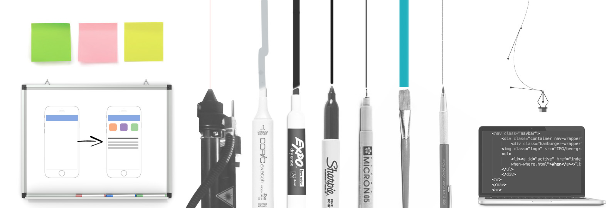

Tools
Pen & Paper, Whiteboards, Sticky Notes, Photoshop, Illustrator, Sketch, Omnigraffle, InVision, Keynote, Sublime Text, Git, Lasercutter, CNC Mill
Methodologies

Agile & Lean UX, Human-Centered Design, Design Thinking, Collaborative/ Participatory Design, Lateral Thinking, Rapid Iteration & Prototyping, Constant Feedback & Usability Testing
Process
The first stage of a project is exploration. First we ask, "What are we trying to solve?" and "Is this the best method to solve this problem?" After we're certain that there is a real need, we explore through collaborative and participatory design several approaches to the problem. We also ask "Who else has solved this problem?" and "How successful have their approaches been?" In the ideation stage we go wide, coming up with sometimes absurd 'outside the box' sorts of ideas. After ideating, we prune down and latch on several core approaches and then test them and get user feedback working out usability issues. At this stage it's also useful to test your solution in context and against a whole range of potential users to ensure that your solution makes sense to a wide audience. The more you research your users to better understand a day in their shoes, the more empathetic you'll be to fully understand their lives & needs. From here, we can start engineering and building, continuing to incorporate regular feedback.
Education
General Assembly: UX Design Immersive 2015-2016
Online Courses: Frontend Web Development, Programming 2013-2014
Techshop: Metal & Wood Fabrication 2013
UC Davis: Landscape Architecture & Electrical Engineering 2007-2010